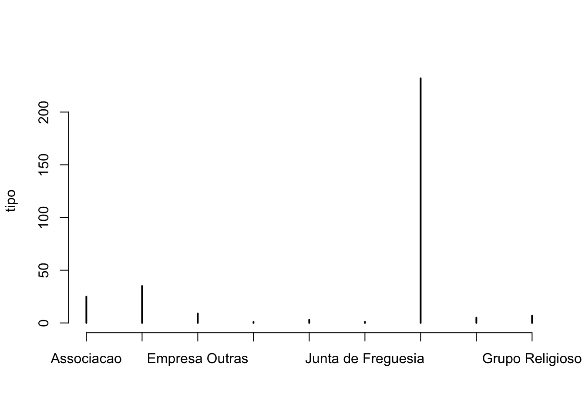
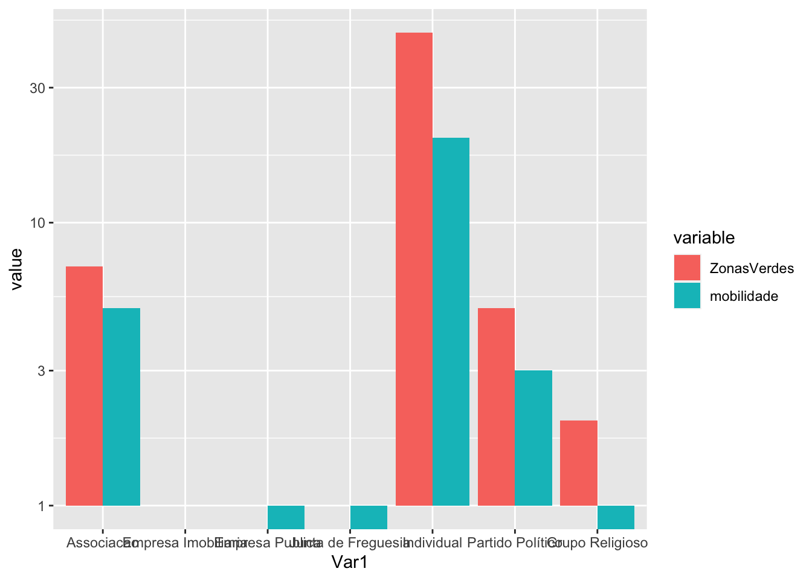

load("~/Dropbox/_R-SCool/_RSCool.B_Website/RSCool_a_web_24/web_RSCool _Aveiro_1/z_Averiro_bases/z_MariaParticipacaoPublica.Rdata")
PP <- ParticipacaoPublicaA base de dados em R
A sustentabilidade na Participação Pública do PDM - PORTO
Base de dados com as participações recebidas (tipologia de participantes, temática da participação e apreciação final)
colnames(PP) [1] "N_ponderacao" "Tipo_Participacao"
[3] "Apreciacao" "Zonas_verdes"
[5] "Mobilidade_urbana" "Imobiliario"
[7] "Pedido_capacidade_construtiva" "Outros_construcao"
[9] "Transportes_viaria" "Outros"
[11] "Equipamentos" "Patrimonio"
[13] "Hab_acessivel" "Atividades_economicas" head(PP) N_ponderacao Tipo_Participacao Apreciacao
1 1 EI Esclarecida
2 2 I N\xe3o Acolhida
3 3 EO N\xe3o Acolhida
4 4 I Parcialmente Acolhida
5 5 R Parcialmente Acolhida
6 6 I N\xe3o impedida/permitida pelo Plano
Zonas_verdes Mobilidade_urbana Imobiliario Pedido_capacidade_construtiva
1 NA NA 1 NA
2 NA NA 1 1
3 NA NA NA NA
4 NA NA NA NA
5 NA NA 1 1
6 NA NA 1 NA
Outros_construcao Transportes_viaria Outros Equipamentos Patrimonio
1 NA NA NA NA NA
2 NA NA NA NA NA
3 NA NA NA NA NA
4 1 NA NA 1 NA
5 NA NA NA 1 NA
6 NA NA 1 NA NA
Hab_acessivel Atividades_economicas
1 NA NA
2 NA NA
3 NA NA
4 NA NA
5 NA NA
6 NA NA#Quem participa mais?
atribuir categorias às iniciais apresentadas na Base de Dados
PP$Tipo_P <- factor(PP$Tipo_Participacao,
levels = c("A","EI","EO","EO/A","EP","F","I","P","R"),
labels = c("Associacao","Empresa Imobiliaria","Empresa Outras","Empresa","Empresa Publica","Junta de Freguesia","Individual","Partido Político","Grupo Religioso"))tipo <- table(PP$Tipo_P)
tipo
Associacao Empresa Imobiliaria Empresa Outras Empresa
25 35 9 1
Empresa Publica Junta de Freguesia Individual Partido Político
3 1 232 5
Grupo Religioso
7 mostrar em gráfico o número de participações por tipologia de participante
plot(tipo)
quem participa em questões de sustentabilidade (zonas verdes e mobilidade urbana)
verde <- as.data.frame(table(PP$Tipo_P,PP$Zonas_verdes))
colnames(verde)[which(names(verde) == "Freq")] <- "ZonasVerdes"
mobilidade <- as.data.frame(table(PP$Tipo_P,PP$Mobilidade_urbana))
verde$mobilidade <- mobilidade$Freq
verde$Var2 <- NULL###retirar duas linha da tabela (Empresas)
verde <- verde [-c(3,4),]
verde Var1 ZonasVerdes mobilidade
1 Associacao 7 5
2 Empresa Imobiliaria 1 1
5 Empresa Publica 1 0
6 Junta de Freguesia 1 0
7 Individual 47 20
8 Partido Político 5 3
9 Grupo Religioso 2 0ver gráfico
library(reshape2)
library(ggplot2)
dfm <- melt(verde[,c('Var1','ZonasVerdes','mobilidade')],id.vars = 1)
ggplot(dfm,aes(x = Var1,y = value)) +
geom_bar(aes(fill = variable),stat = "identity",position = "dodge") +
scale_y_log10()Warning: Transformation introduced infinite values in continuous y-axis
TAKE HOME MESSAGE:
São as Participações invididuais e das Associações da Sociedade Civil que participam mais em temas associados a questóes de sustentabilidade como as Zonas Verdes e a Mobilidade Urbana